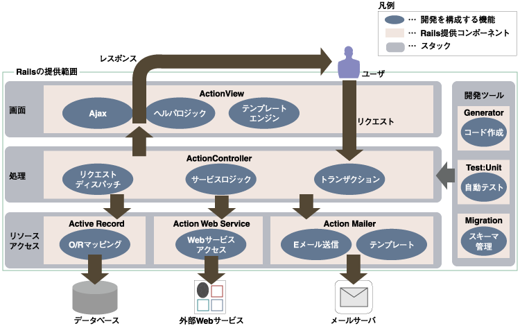

ここでは，Ruby on Rails とは何か？また，世の中に与えた影響，構成について簡単に学ぶ
"Ruby on Rails（ルビーオンレイルズ）はオープンソースのWebアプリケーションフレームワークである。 RoRまたは単にRailsと呼ばれる。その名にも示されているようにRubyで書かれている。 またModel View Controller(MVC)アーキテクチャに基づいて構築されている。
実アプリケーションの開発を他のフレームワークより少ないコードで簡単に開発できるよう考慮し設計されている。 Railsの公式なパッケージはRubyのライブラリやアプリケーションの流通ルートであるRubyGemsにより配布されている。"
-- via Ruby on Rails
Railsの基本理念は「同じことを繰り返さない」(DRY:Don't Repeat Yourself)と 「設定よりも規約」(CoC:Convention over Configuration)である。
「同じことを繰り返さない」というのは、定義などの作業は一回だけですませろとの意味である。 Railsはフルスタックのフレームワークであり、コンポーネントの統合は手動での設定を必要とせず自動で行われる。
例えばRuby on Railsに組み込みのORMライブラリであるActiveRecordではクラス定義において、 データベースから読み取るべき属性名等を指定する必要はない。 ActiveRecordはRDBMSの表定義から自動的にその情報を取得する。 従ってプログラムとRDBMSの両方にそれを定義するというような無駄な作業を行う必要はない。
「設定よりも規約」とは、標準的な設定は決まったルールに従い、共通でない部分の設定のみを行うようにするべき、ということである。
【参考リンク】
Ruby on Rails では冗長な XML による設定ファイルの代わりに， 命名規則とファイル配置を規約として徹底します。これにより，劇的に設定項目を削減します。
Rails ではプログラムがデータベースの構造を調査し，それに基づいた機能をアプリケーションに適用します。
Ruby はデフォルト値を設定する機能が充実しています。 Rails を使った開発では，共通パラメータを設定する必要はほとんどありません。 しかも，デフォルト値は必要に応じて自由に変更できます。
Rails での開発では，1行変更したら，ブラウザを再読み込みするだけで変更内容を確認できます。 Java での開発ではたいていの場合に特別なビルドやデプロイ手順が必要になるのとは対照的です。 毎日何度も繰り返す作業を5分短縮することの効果は過小評価されがちですが，見過ごせないものです。
Rails は Ajax を利用したアプリケーション構築コストを節減します。 Ajax を使うと，Web アプリケーションをよりインタラクティブにできます。 ユーザに流れるような操作感と，印象に残る使い勝手を提供できます。
設定ファイルを書くことで柔軟さを確保してきた今までの開発手法を DHH は "古い考え方" と言い， あたかも敷かれたレールを走る（規約に沿った）ような開発手法のほうが良いということを Ruby on Rails で提唱した。 世の中の多くのデベロッパーはこの考え方に賛同し，Ruby 以外でも Rails のような考え方を採用したフレームワークが生まれている。
| 言語 | フレームワーク |
|---|---|
| Python | Django，Fanery，Subway，TurboGears |
| Perl | Catalyst |
| JavaScript | TrimJunction |
| PHP | CakePHP，symfony，Seagull，PHP on TRAX |
| .NET | MonoRail |
| Java | Wicket，Sails，Trails, Teeda(Seasar2) |
| Smalltalk | Seaside |
-- via Java から Ruby へ

【参考リンク】